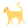

 Les chats
Le Chat domestique (Felis catus) est une espèce de mammifères carnivores, de la famille des Félidés. Issu de la domestication du chat sauvage Felis silvestris, il était anciennement considéré comme une sous-espèce de celui-ci, sous la dénomination Felis silvestris catus.